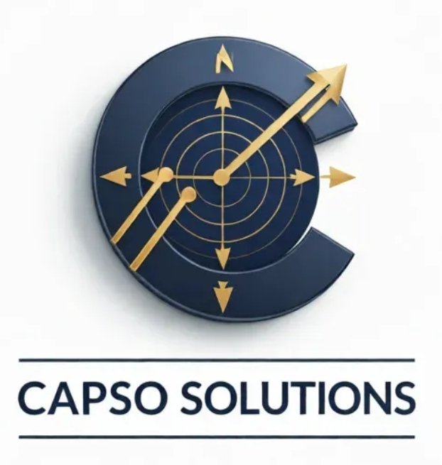

Réponse sous 24h. Aucun engagement. Confidentialité garantie.
Nous vous contacterons dans les 24h pour planifier votre audit de performance.
Un dirigeant du transport sanitaire gère des plannings impossibles, une convention parmi les plus complexes de France, et des outils qui ne lui donnent aucune vision consolidée. CAPSO installe la structure qui permet de reprendre le contrôle.
Quand l'urgence devient la norme,
la structure devient vitale.
CAPSO
l'installe.
Structurer les bases

Mesurer en continu
Décider sur les faits
Trois vérités que tout dirigeant du transport sanitaire connaît, mais que personne ne résout vraiment.
Vous portez une responsabilité de service public. Vos équipes doivent être disponibles 24h/24, 365 jours par an. L'organisation des plannings est une équation permanente.
La convention du transport sanitaire est l'une des conventions collectives les plus complexes de France. Heures de nuit, dimanches, coupures, repas : chaque ligne de paie est un risque contentieux potentiel.
Vous pilotez à vue. Les outils métiers vous donnent des données opérationnelles, mais aucun ne vous offre une vision consolidée de la performance sociale, financière et humaine.
On ne vend pas des outils. On installe une capacité de pilotage supérieure.
Découvrir l'écosystèmeTrois piliers conçus pour s'articuler. Une seule trajectoire : de la formation à la performance mesurée.
Les problèmes de performance viennent rarement d'un manque de travail. Ils viennent d'un manque de structure. CAPSO Academy forme vos équipes — du back-office à la direction — pour installer des process fiables et des données sur lesquelles vous pouvez vous appuyer.
Deux outils SaaS indépendants, conçus pour mesurer ce que vos logiciels métier ne voient pas.
Analyse et conformité de la facturation. Vérifie la validité de vos pièces avant télétransmission pour atteindre l'objectif zéro rejet CPAM.
Copilote de votre temps de travail et de votre masse salariale. Alertes en temps réel sur les dérives de planning, conformité convention du transport sanitaire automatisée, impact masse salariale calculé instantanément.
Quand les enjeux sont trop importants pour improviser. CAPSO 360 est un accompagnement sur-mesure pour les dirigeants qui veulent reprendre le contrôle de leur organisation.
Régulation, facturation, climat social, conformité RH. On identifie les fuites de rentabilité cachées et on livre un plan d'actions prioritaires.
Les équipes ont changé. Les attentes aussi. On adapte votre management pour engager des collaborateurs qui exigent sens, clarté et reconnaissance — sans sacrifier la performance opérationnelle.
Passer de 10 à 30 véhicules change la nature de votre métier. On construit la feuille de route, on adapte la gouvernance, on crée les processus qui vous permettent de déléguer sans perdre le contrôle.
Chaque pilier crée l'adhérence pour le suivant. C'est une architecture de confiance, pas une collection d'outils.
11 ans d'opérations sanitaires distillés en une méthodologie structurée. Testée. Validée.
Installer les capteurs. Mesurer ce qui existe vraiment, pas ce qu'on suppose. Audit initial complet.
Interpréter les signaux faibles. Identifier les risques avant qu'ils deviennent des sinistres.
Arbitrer sur des faits, pas sur des ressentis. Chaque décision tracée, chaque impact mesuré.
La méthodologie CAPSO n'est pas née dans un bureau. Elle a été forgée, testée et affinée pendant plus d'une décennie sur un site d'exploitation réel — dans les conditions les plus exigeantes du secteur.
C'est ce laboratoire qui a permis d'identifier les capteurs indispensables — ceux qu'aucun éditeur logiciel ne peut voir, parce qu'ils se trouvent dans les failles entre les outils.
Les résultats ci-contre ne sont pas des projections. Ce sont des faits terrain.
28 ans de management. Industrie multi-sites, logistique lean, groupe national de transport sanitaire, puis direction générale d'une structure indépendante conduite de la reprise à +185% de CA. Membre de CODIR. Pilote de migrations ERP en conditions réelles. Utilisateur quotidien des outils IA opérationnels.
Ce parcours transversal est la colonne vertébrale de CAPSO : des méthodes issues de l'industrie de performance, appliquées à un secteur sanitaire qui en a besoin mais qui n'y a jamais eu accès.
CAPSO n'est pas une collection d'outils. C'est une méthode complète — process, management, recrutement, pilotage, stratégie — construite sur une décennie dans le transport sanitaire et 28 ans de pratique managériale.
"Mieux piloter pour reprendre le contrôle. C'est pour ça que CAPSO existe."
Votre audit de performance est gratuit. Sans engagement. Réponse sous 24h.
CAPSO n'est lié à aucun éditeur logiciel. Notre conseil est objectif par structure.
On parle votre langue. la convention du transport sanitaire, CPAM, VSL, BLS — on n'a pas besoin qu'on nous explique.
On ne livre pas des recommandations. On installe des mécanismes qui produisent des résultats vérifiables.